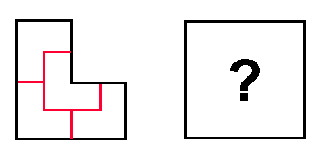

 Once upon a time there existed a king that held the greatest fortune in the entire world. He had 4 sons and he loved them equally.
The years passed and one day the king was dying. He decided then to give his kingdom equally to his four sons. Suppose that we represent the kingdom by set of connected squares. Some locations on a kingdom had special natural resources like gold, marked as 'G'. Other places whith no natural resources are marked with X. Here is a map of the kingdom:
XX GG GXXG XXXX
The king wanted that each son had exactly the same number of squares, that all squares of the same son would be connected (vertically or horizontally) and that the shape of each son's terrain would be exactly the same, except for rotations or reflections.
He then asked all the wise men from the kingdom to find an answer for this problem and after months thinking they found the following solution (each son's terrain is indicated by a different number):
11 12 3224 3344But if the terrain was different, could you find a solution? And if the resources were also different? And if he had a different number of children?
Your task it find if there exists a way to divide a determined terrain in
N different parcels of terrain, each one exactly with the same shape
(except for rotations and reflections) and the same set of natural resources.
Input
The input starts with a single number T indicating the number of test cases that follow.
Each test case starts with a line with three integer numbers L, C and N (1 ≤ L,C ≤ 10 and 1 ≤ N ≤ 5), indicating the number of lines and columns that the closest rectangle that could enclose the terrain has, and also the number N of sons that the king has.
Then follows L lines giving the map of the terrain where
The first sample input corresponds to the original map described earlier.
Output
For each test case output a single line saying only "Yes" if it is possible
to divide the terrain in the specified conditions and "No" otherwise.
Sample Input
3 4 4 4 ..## GG## G... ...G 4 4 4 ..## GG## G... ...A 6 4 2 ABAB CDCD EFEF ABAB CDCD EFEF
Yes No Yes